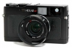

器材库 > 旁轴胶片相机 > Hexar RF

该产品没有存档的规格参数
无所谓5912011-07-07 14:134.5 分
操作性 4.50功能性 5.00美观性 3.50趣味性 5.00耐用性 4.00性价比 5.00
大漠人也2010-03-03 12:504.25 分
操作性 4.50功能性 4.50美观性 4.50趣味性 4.50耐用性 3.50性价比 4.00
熬糟2007-11-11 10:524.42 分
操作性 4.50功能性 4.50美观性 4.50趣味性 4.00耐用性 4.00性价比 5.00
夜独行2005-10-04 22:504.42 分
操作性 5.00功能性 5.00美观性 4.50趣味性 4.00耐用性 3.50性价比 4.50
leon1182005-03-27 08:144.92 分
操作性 4.50功能性 5.00美观性 5.00趣味性 5.00耐用性 5.00性价比 5.00
经典是硬道理2004-11-14 09:304.33 分
操作性 4.50功能性 4.00美观性 4.00趣味性 4.50耐用性 4.50性价比 4.50
夜独行2004-09-05 12:29

losanfo2004-08-20 01:504.25 分
操作性 4.50功能性 4.50美观性 4.50趣味性 4.50耐用性 3.50性价比 4.00
apo90aa2003-08-19 14:554.83 分
操作性 5.00功能性 5.00美观性 5.00趣味性 5.00耐用性 4.00性价比 5.00
侠探寒羽良2003-06-29 15:353.92 分
操作性 4.50功能性 4.50美观性 4.50趣味性 3.00耐用性 3.50性价比 3.50
该产品暂无存档的产品图
评测 / 相关文章
该产品暂无存档的评测文章